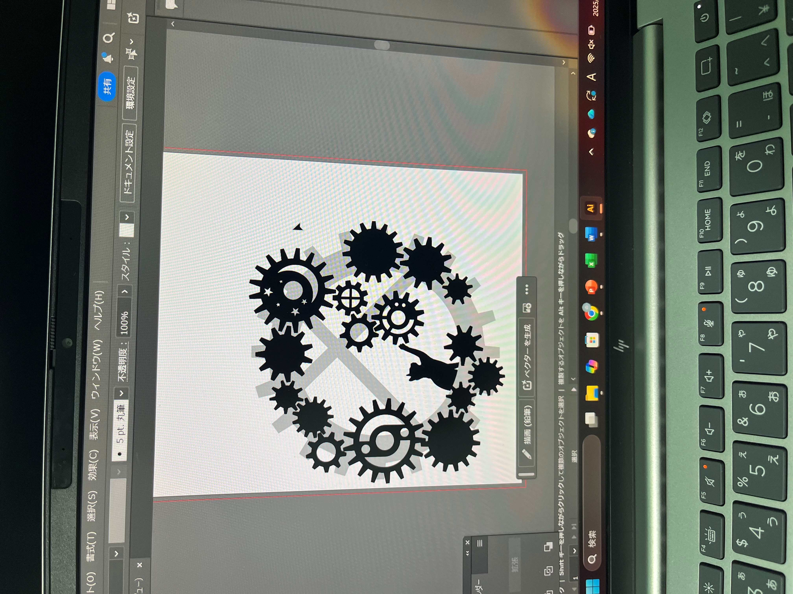
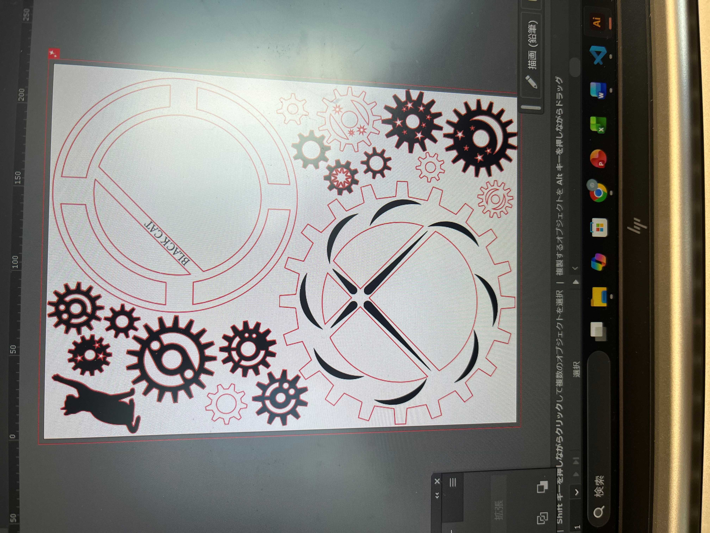
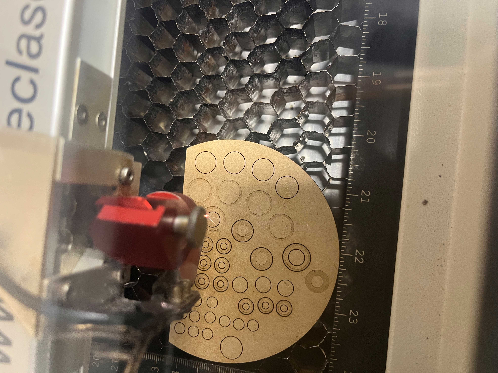
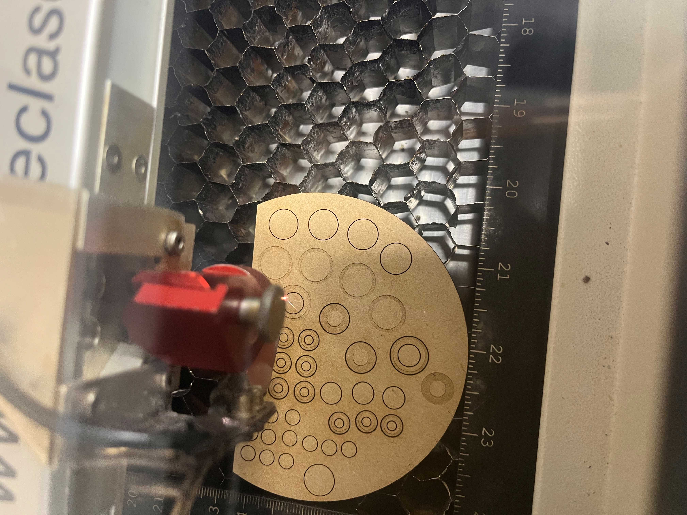
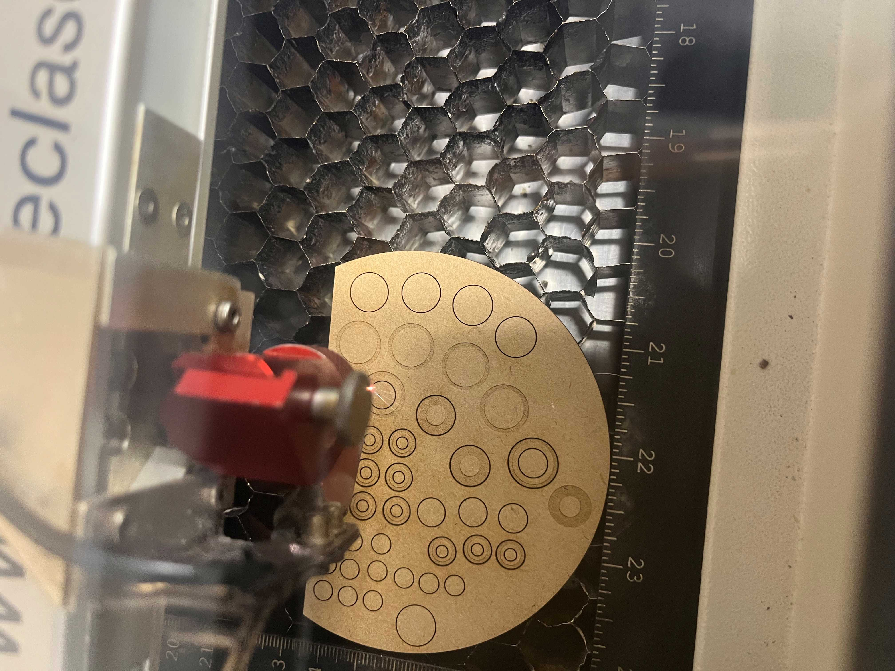

レーザーカッターを用いた制作課題
【手書きイメージ】
【考えた理由】
クリスマスが近いのでリースをモチーフに飾りを作ろうとした。
自分が家に飾りたいと思えるものを作りたかった。
【完成型】
aiファイル
aiファイル
【作品の説明】
裏側に磁石を貼り、くっつけられるようにした。
重ねることで奥行きが出たり、影が出やすくなり、見た目が良くなった。
もともと歯車を動かすつもりはなかったので計算せず作っていたが、組み合わせを変えることでうまくつながった。
【工夫した点】
裏側に磁石を貼り、くっつけられるようにした。
重ねることで奥行きが出たり、影が出やすくなり、見た目が良くなった。
【制作風景】
 



 
